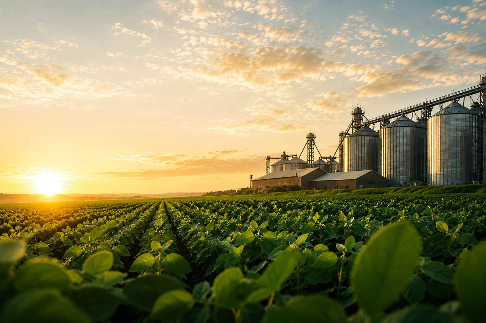

Básico
Cuidados com o Solo
Aprenda práticas para evitar erosão e manter nutrientes no solo.

Intermediário
Irrigação Inteligente
Descubra maneiras de economizar água e melhorar a produtividade.

Avançado
Tecnologia no Agro
Conheça sensores, monitoramento e ferramentas modernas para produção.